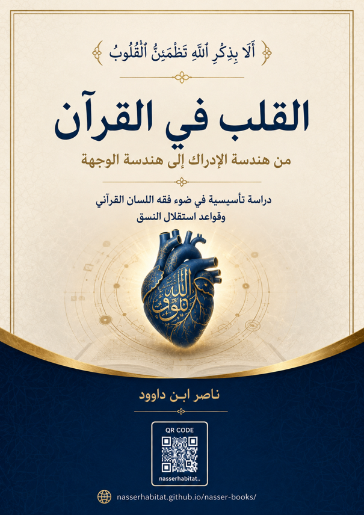

ناصر ابن داوود

نسخة نصية مستخرجة من ملف Word الذي قدمه المؤلف؛ راجع المصدر الأصلي.
جارٍ تجهيز القارئ…
القلب في القرآن
من هندسة الإدراك إلى هندسة الوجهة
دراسة تأسيسية في ضوء فقه اللسان القرآني وقواعد استقلال النسق
المقدمة
لماذا هذا الكتاب؟
هذا الكتاب ليس استئنافاً لكتب التنمية البشرية المعاصرة، ولا محاولة لإعادة إنتاج الخطابات الروحية الحديثة بلغة قرآنية، ولا مشروعاً لإسقاط النظريات النفسية أو الفلسفية أو الفيزيائية الوافدة على نصوص الوحي. كما أنه لا ينطلق من الرغبة في إثبات أن ما يقوله القرآن عن القلب يوافق بالضرورة ما تقوله العلوم الحديثة عن الدماغ أو الجهاز العصبي أو المجالات الكهرومغناطيسية أو المشاعر.
نقطة البداية هنا أكثر بساطة، وأكثر صعوبة في الوقت نفسه: ماذا يقول القرآن عن القلب إذا تركنا القرآن يعرّف القلب بنفسه؟
هذا السؤال يبدو لأول وهلة سؤالاً لغوياً محدوداً، لكنه في الحقيقة يفتح على إشكال معرفي واسع؛ لأن مفهوم القلب في الوعي المعاصر لم يعد مفهوماً قرآنيّاً خالصاً. فقد تراكمت حوله طبقات من المعاني الطبية والنفسية والصوفية والفلسفية والتنموية، حتى أصبح من الصعب أحياناً التمييز بين ما يقوله القرآن بالفعل، وما قاله التراث عنه، وما أضافته الثقافة الحديثة، وما أصبح متداولاً اليوم بوصفه «حقيقة» لمجرد كثرة تكراره.
ومن هنا تأتي ضرورة العودة إلى نقطة الصفر المنهجية: لا أن نسأل أولاً ماذا نعرف عن القلب، ثم نبحث عن آيات تؤيده؛ بل أن نسأل ماذا يقول النسق القرآني عن القلب، ثم نترك النتائج التي يفرضها الاستقراء تتشكل تدريجياً.
فالقرآن لا يقدم القلب في موضع واحد ولا من خلال تعريف اصطلاحي مباشر، وإنما يوزعه داخل شبكة واسعة من الوظائف والحالات والعلاقات. فالقلب يعقل ويفقه ويتذكر ويخشع ويطمئن، وفي المقابل يوصف بأنه سليم ومريض وقاسٍ ومختوم ومطبوع وزائغ وغافل ومنيب. وهذا التنوع ليس مجرد قائمة من الصفات المتجاورة، بل هو مادة أولية لبناء سؤال أعمق: ما البنية التي تسمح للقلب بأن يؤدي هذه الوظائف وأن ينتقل بين هذه الحالات؟
ولهذا لا يتعامل الكتاب مع «القلب» بوصفه مفردة معزولة ينبغي العثور على مرادف لها، وإنما بوصفه عقدة داخل شبكة دلالية قرآنية. فالهدف ليس أن نقول إن القلب يعني كذا وكذا، ثم ننتهي، بل أن نكتشف كيف يعمل المفهوم داخل النسق: ما الذي يرتبط به؟ وما الذي يوصف به؟ وما الوظائف التي تُسند إليه؟ وما الحالات التي يمكن أن يمر بها؟ وما علاقته بالبيان والهداية والاستجابة والرفض والإنابة والزيغ والرضا والطمأنينة والسلوك؟
وهذا هو الفارق بين البحث عن «معنى كلمة» والبحث عن «بنية مفهوم».
إشكالية البحث
الإشكالية المركزية التي يطرحها هذا الكتاب هي:
كيف يعرض القرآن «القلب» داخل شبكة وظائف وحالات وعلاقات تجعل منه عنصراً مركزياً في توجيه الإنسان، دون أن نسقط عليه المفاهيم النفسية الحديثة أو النماذج الطاقية والفلسفية الوافدة؟
لكن هذه الإشكالية تتفرع منها أسئلة أكثر عمقاً:
إذا كان القرآن يجعل القلب موضعاً للتعقل والفقه والتذكر والخشوع والطمأنينة، فهل يدل ذلك على أن القلب في اللسان القرآني مفهوم معرفي بالدرجة الأولى؟ أم أن هذه الوظائف لا تكشف إلا جانباً من بنية أوسع؟
وإذا كان القلب يوصف في الوقت نفسه بالسلامة والمرض والقسوة والختم والطبع والزيغ والغفلة والإنابة، فهل نحن أمام «حالات» مختلفة لبنية واحدة؟ أم أمام استعمالات دلالية متعددة لا يجوز جمعها تحت نموذج واحد قبل اكتمال الاستقراء؟
وإذا ظهرت في النص علاقات بين البيان والقلب والاستجابة والرضا والطمأنينة والسلوك، فهل تكشف هذه العلاقات عن بنية تشغيلية متتابعة؟ أم أنها شبكة من المفاهيم المتقاطعة لا يجوز تحويلها إلى خط سببي لمجرد اقترانها؟
هذه الأسئلة هي التي تجعل موضوع القلب يتجاوز البحث المعجمي إلى البحث البنيوي. فالمشكلة ليست في أن الناس لا يعرفون معنى كلمة «القلب»، وإنما في أن المفهوم نفسه تعرض عبر التاريخ لعمليات اختزال وإعادة تعريف وإسقاط، حتى أصبح من الضروري أن نعيد بناء حدوده من داخل النص.
لماذا القلب؟
يُثير الاستقراء الأولي للخطاب القرآني سؤالاً لا ينبغي تجاوزه سريعاً: لماذا جعل القرآن «القلب» موضعاً لعدد من الوظائف المعرفية والإدراكية، ولم يجعل «العقل» اسماً مركزياً بالمعنى الاصطلاحي الذي استقر في الخطابات الفلسفية والكلامية اللاحقة؟
لا يعني هذا السؤال أن القرآن ينفي العقل أو يلغي التفكير، ولا يعني أن القلب والعقل ضدان أو بديلان متصارعان. بل المقصود هو شيء أدق: لماذا يعبّر القرآن عن عدد من العمليات التي نطلق عليها اليوم ألفاظاً عقلية من خلال أفعال تُسند إلى القلب؟
إن القرآن يقول عن القلب إنه يعقل ويفقه ويتذكر، كما يربطه بالخشوع والطمأنينة والإيمان والزيغ والقسوة والمرض. وهذه الشبكة تستحق أن تُقرأ كما هي، قبل أن نقوم بترجمتها إلى مصطلحات نفسية أو فلسفية حديثة.
ومن هنا يصبح السؤال «لماذا القلب؟» سؤالاً في بنية اللسان القرآني نفسه، لا سؤالاً في المفاضلة بين عضوين أو جهازين.
حدود الدراسة
تقتصر هذه الدراسة في طبقتها التأسيسية على الاستقراء اللغوي والدلالي لمفهوم القلب وما يتصل به في القرآن الكريم، مع التركيز على الجذر، والتصريفات، والسياقات، والوظائف، والحالات، والشبكات الدلالية والعلاقات البنيوية.
ولا يعني ذلك أن الكتاب يعزل القلب عن بقية المفاهيم القرآنية؛ بل العكس هو الصحيح. فالقلب لا يمكن أن يُفهم باعتباره جزيرة مفهومية مستقلة. ولذلك ستظهر في الدراسة علاقاته بمفاهيم مثل النفس، والروح، واللب، والبيان، والهدى، والذكر، والفقه، والتقوى، والإنابة، والزيغ، والرضا، والطمأنينة، والخشوع وغيرها.
غير أن هذه العلاقات لن تُفترض مسبقاً، ولن تُبنى على مجرد التشابه اللفظي أو التقارب في الخطاب المعاصر، بل ستخضع للاختبار داخل موارد القرآن.
أما العلوم الحديثة، بما فيها علم النفس والعلوم العصبية والطب والفيزياء، وكذلك الخطابات الروحية المعاصرة، فلا تدخل في تعريف المفهوم القرآني. يمكن أن تظهر في فصل مقارن أو نقدي، عندما تكون المقارنة مفيدة في اختبار نموذج أو كشف اختلاف في منطلقات المعرفة، لكنها لا تصبح مصدراً لتعريف القلب القرآني.
وبذلك يكون هناك فصل منهجي بين مرحلتين: مرحلة تأسيس المفهوم من القرآن، ومرحلة مقارنة المفهوم بما أنتجته المعارف البشرية.
المنهج الاستقرائي
المنهج المعتمد في هذا الكتاب هو الاستقراء الكامل قبل إطلاق الحكم.
والمقصود بالاستقراء الكامل هنا ليس مجرد جمع عدد من الآيات التي يظهر فيها لفظ القلب، وإنما بناء corpus مضبوط لموارد المفهوم، ثم دراسة كل مورد في سياقه، ثم رصد التصريفات والاقترانات والعلاقات، ثم البحث عن الثوابت التي تتكرر عبر السياقات المختلفة.
فالمنهج لا يسأل فقط: أين ورد القلب؟ بل يسأل أيضاً: كيف ورد؟ ومع أي أفعال؟ ومع أي أوصاف؟ وفي أي بنى تركيبية؟ وماذا يتغير حين يتغير السياق؟ وما الذي يبقى ثابتاً رغم تغير السياقات؟